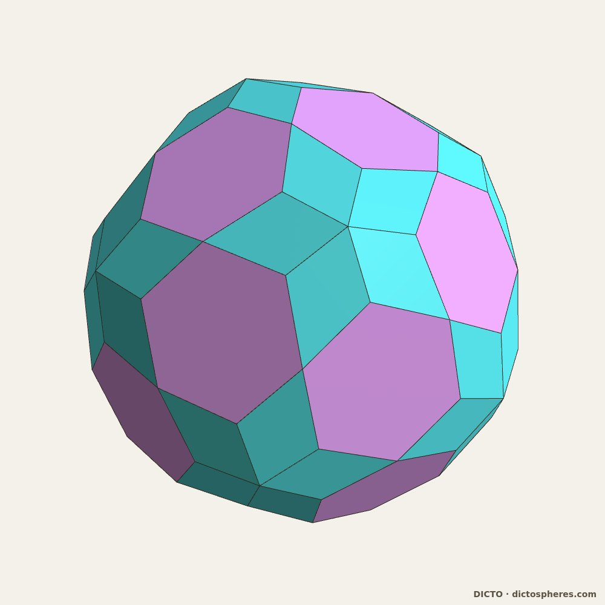
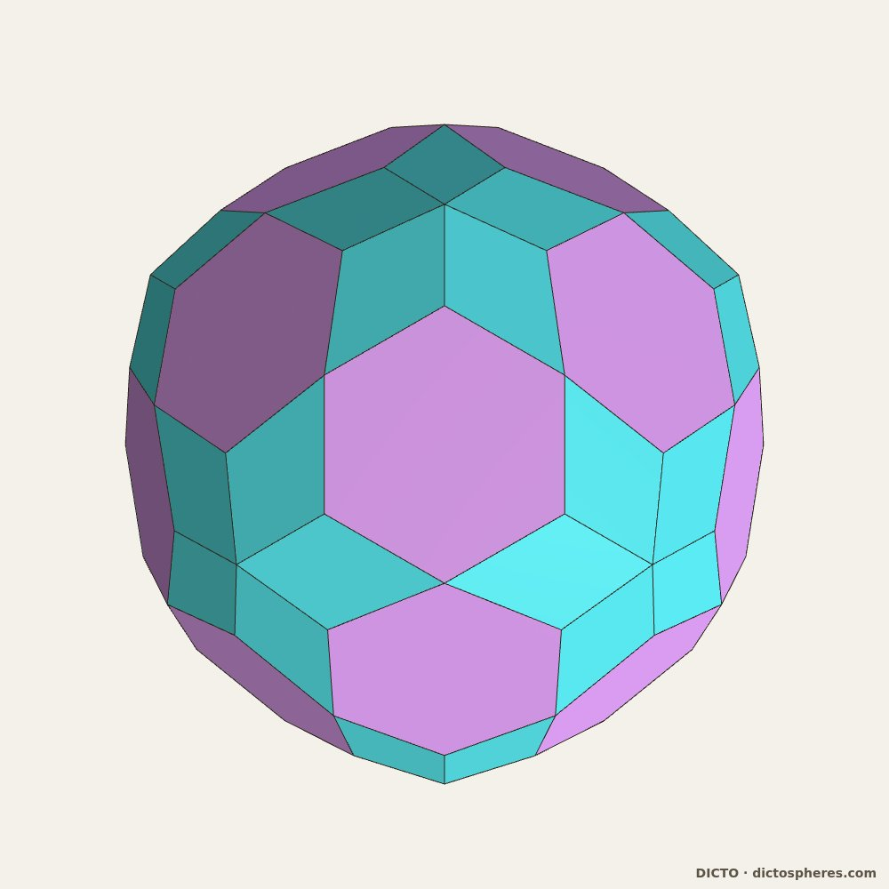
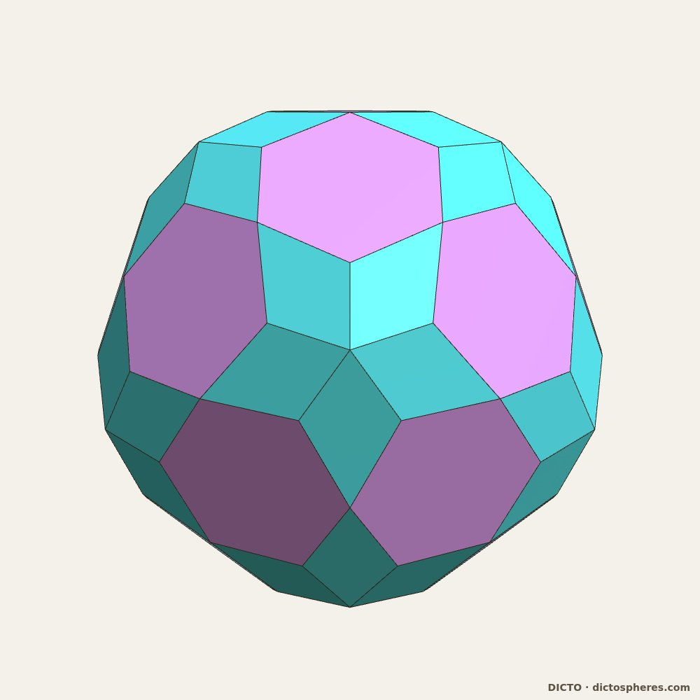

A convex icosahedral solid of 20 regular hexagons and 60 kites: the polar dual of the DICTO Truncated-Icosahedral Hecatodihedron, and a station of the Spheres of Dharma turned inside out
DICTO (artist, Osaka, Japan) · contact@dictospheres.com · https://dictospheres.com
Draft 3 · 16 October 2026 · DICTO DOI: on publication · Licence CC BY 4.0 · Data, scripts and exact checks: https://github.com/DICTOR-Master/kaleidohedra (studies/2026-10-16-polar-dharma; face arrangement in studies/2026-10-16-ocd-pyrochlore).
The Hecatodihedron, the idea of turning the Spheres of Dharma inside out, and the name Ogdoecontahedron are DICTO's. Computation, exact arithmetic and renders were done with Claude (Anthropic) as a research assistant.
Abstract. The DICTO Ogdoecontahedron is the polar dual of the DICTO Truncated-Icosahedral Hecatodihedron. It has 80 faces (20 regular hexagons and 60 kites), 102 corners and 180 edges, only two edge lengths, and 90 of its corners on one sphere, the inside-out image of the Hecatodihedron's 90 faces touching one sphere; every coordinate is exact in ℚ(√5). It is the pentakis dodecahedron with its 20 six-fold corners cut off flat. Its face arrangement is known (the dual of L0 applied to the dodecahedron, in the notation of the Antiprism software), but the metric solid, with regular hexagons and these kites, was not found in the sources checked. It appeared when DICTO turned the Spheres of Dharma inside out, as the one new station of the reversed cycle (companion paper). On its own it is not a piece of an icosahedral quasicrystal; its packings are the subject of a separate paper (#30).
1. Where it comes from
The DICTO Truncated-Icosahedral Hecatodihedron (DICTO DOI: 10.5281/zenodo.23360858) is the truncated icosahedron with a Shield on each hexagon: 102 faces (12 pentagons, 30 rhombi, 60 triangles) and 80 corners. It arises as the seventh stage of the Spheres of Dharma (DICTO DOI: 10.5281/zenodo.23310833), an exact cycle of nested icosahedral solids, taking each closed stage as one solid (Capturing the In-betweens, DICTO DOI: 10.5281/zenodo.23345502).
DICTO asked what the Spheres of Dharma look like turned inside out. Polar reciprocation in a sphere about the common centre sends each face plane to a point and each corner to a plane, so every solid goes to its dual, and the nesting reverses (a classical fact of convex geometry; see e.g. Firsching 2015). The reversed cycle is dodecahedron ⊂ icosidodecahedron ⊂ Ogdoecontahedron ⊂ pentakis dodecahedron ⊂ icosahedron ⊂ rhombic triacontahedron ⊂ dodecahedron φ³ larger. Every other station is a classical solid; the polar of the Hecatodihedron is new. The reversed cycle itself, its pieces and its gaps are the subject of a companion paper, The Spheres of Dharma Turned Inside Out.
2. The solid
DICTO named it for its faces, as he named the Hecatodihedron for its 102: the Ogdoecontahedron, from Greek ὀγδοήκοντα (eighty) and ἕδρα (face). Coordinates below are in the scale of the reversed cycle (reciprocation in the unit sphere); all are exact in ℚ(√5).
80 faces, 102 corners, 180 edges (102 − 180 + 80 = 2). Each face is the dual of a Hecatodihedron corner. The 20 Shield apexes, where six faces meet, become 20 regular hexagons; the 60 corners of the truncated icosahedron, where four faces meet, become 60 kites. Corners: 12 where five faces meet, 30 where four meet, 60 where three meet.
Two edge lengths. The hexagon side squared is 2/9 − 2√5/27 (side 0.237881); each kite has two sides of that length, next to the hexagons, and two of squared length 86/3249 + 2√5/361 (side 0.197124): 120 edges of the first length and 60 of the second. The hexagons are regular (all angles 120°); the kite angles are 117.85° (twice), 68.62° and 55.69°.
One sphere, inside out. 90 corners lie exactly on the sphere of radius 2/3; the other 12 sit just outside, at squared radius (170 + 2√5)/361. The Hecatodihedron has 90 faces touching one sphere and its 12 pentagons a little inside it: reciprocation trades a tangent sphere of faces for a sphere of corners.
Built from the dual side. The Hecatodihedron adds a pyramid-like Shield to each hexagon of the truncated icosahedron; dually, the Ogdoecontahedron is the pentakis dodecahedron (the truncated icosahedron's dual) with its 20 six-fold corners cut off flat into regular hexagons. Adding a cap on one side is cutting a corner on the other.
Volume (−1000 + 1240√5)/1539. It is convex and centrally symmetric.



Figure 1. The DICTO Ogdoecontahedron, hexagons wisteria, kites cyan: (a) oblique; (b) along a three-fold axis, a regular hexagon in the centre; (c) along a five-fold axis, one of the 12 outer corners where five kites meet.
3. Its face arrangement is known; the solid is not
Combinatorially (which faces meet which, ignoring shape), the Ogdoecontahedron is the pentakis dodecahedron with its 20 six-fold corners cut down to the edge midpoints. In the operator notation of the Antiprism software (Rossiter) it is the dual of L0 applied to the dodecahedron, so the Hecatodihedron has the arrangement of L0(D). We checked this by an exact isomorphism search on the face maps (mirror images allowed), with controls: randomly relabelled corners still match, and swapping two corners of one hexagon breaks the match. L0 was built from Antiprism's written definition; the program itself was not run.
What we did not find is this metric solid, with regular hexagons and these kites. McCooey's Visual Polyhedra (553 solids, scanned in full) has no solid with its counts or its dual's. The nearest catalogued relative is the 6-truncated pentakis dodecahedron (20 hexagons, 60 pentagons), whose truncation, carried to the edge midpoints, gives this arrangement.
4. Periodic and aperiodic
The Ogdoecontahedron combines the regular hexagon of periodic honeycombs with icosahedral symmetry, the symmetry of quasicrystals. On its own it is not a piece of an icosahedral quasicrystal (our bridge study, studies/2026-10-16-ogdoecontahedron-bridge, which tested the canonical primitive tiling and three standard cluster shells): its one tie is classical, its 30 two-fold corners being the corners of the icosidodecahedron, the 30-atom shell of the Tsai cluster (Takakura et al. 2007). What happens when many copies of it are packed together is the subject of a separate paper (#30, DICTO DOI: 10.5281/zenodo.23396361).
5. Relation to known work, and reproducibility
Known and credited: polar reciprocation and duality (convex geometry; Firsching 2015); the pentakis dodecahedron and the truncation of its six-fold corners; the face arrangement, as above (Rossiter; McCooey). Not found in our reference library, McCooey's catalogue and web searches (16 October 2026): the metric Ogdoecontahedron, with regular hexagons and kites of 117.85°, 68.62° and 55.69°.
In studies/2026-10-16-polar-dharma: polar.py (exact poles of the Hecatodihedron), hstar_render.py and render_hstar.html (Figure 1). Face arrangement: ocd_dl0d.py and ocd_catalogue_scan.py in studies/2026-10-16-ocd-pyrochlore.
References
M. Firsching, Computing maximal copies of polyhedra contained in a polyhedron, Experimental Mathematics 24 (2015) 98–105, doi:10.1080/10586458.2014.956374.
A. Rossiter, Antiprism, polyhedron modelling software, https://www.antiprism.com.
D. McCooey, Visual Polyhedra, https://dmccooey.com/polyhedra (scanned 15 October 2026).
H. Takakura, C. P. Gómez, A. Yamamoto, M. de Boissieu, A. P. Tsai, Atomic structure of the binary icosahedral Yb–Cd quasicrystal, Nature Materials 6 (2007) 58–63, doi:10.1038/nmat1799.
DICTO, Spheres of Dharma, DICTO DOI: 10.5281/zenodo.23310833.
DICTO, Capturing the In-betweens, DICTO DOI: 10.5281/zenodo.23345502.
DICTO, The DICTO Truncated-Icosahedral Hecatodihedron, DICTO DOI: 10.5281/zenodo.23360858.
DICTO, The Spheres of Dharma Turned Inside Out (companion paper, in preparation).
DICTO, Is the DICTO Ogdoecontahedron a real periodic–aperiodic bridge? Study, 15 October 2026: https://github.com/DICTOR-Master/kaleidohedra/tree/3fd407f/studies/2026-10-16-ogdoecontahedron-bridge.
DICTO, A Fibonacci Spine in a Five-fold Chorus of Ogdoecontahedron Packings, DICTO DOI: 10.5281/zenodo.23396361.